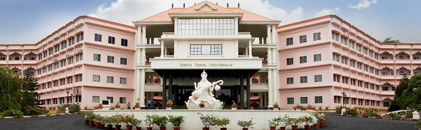

Amrita University is a multi-campus, multi-disciplinary research university that is accredited 'A' by NAAC and is ranked as one of the best research universities in India. The university is spread across five campuses in three states of India - Kerala, Tamil Nadu and Karnataka, with the University headquarters at Ettimadai, Coimbatore, Tamil Nadu.
